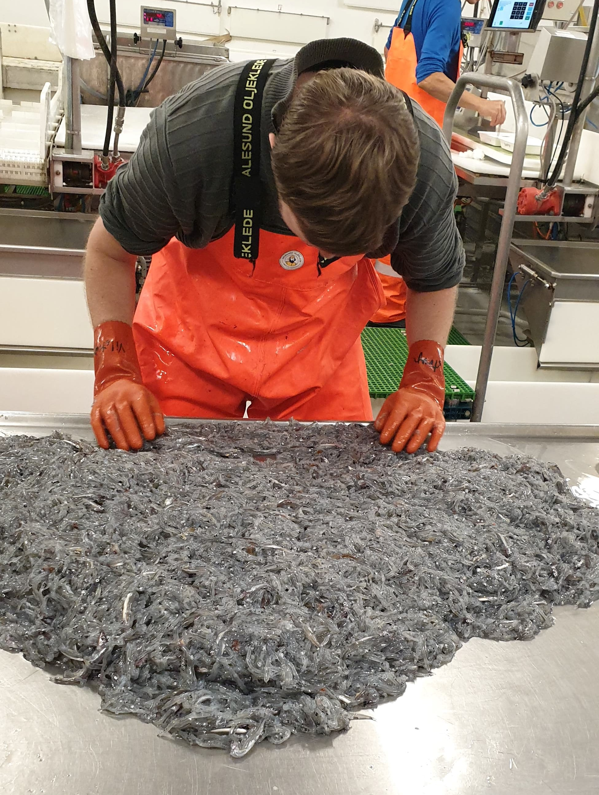

Research Interests
Aquatic ecosystems
I have always, since I was a child, been interested in aquatic ecosystems which has reflected in both my university courses, my career choices and my hobbies. I am facinated with how different organisms are connected within both freshwater and marine ecosystems, and how the introduction, removal, decrease or increase of one species can impact the life-history of other species. This is not just in predator-prey interactions, but interactions such as parasitism, competition within and between species as well. In my spare time, I freedive and SCUBA dive, and though I have had enjoying dives in exotic places such as Fiji, Australia and the Mediterranean, I enjoy mostly just being underwater and watching the different organism that inhabit local parts of a stream, lake or coastline.
Fishery Biology and Management
 During my time both in Norway and Greenland as part of my education, I became very interested in fishery science. As such, I pursued the subject after my graduation, starting with my time as an intern at the Northwest Atlantic Fishery Organization (NAFO) in Canada where I helped in fishery management and attended both political and scientific meetings. I believe that fishery management must be based on scientific advice, but that peoples livelihood also depends on this advice. As such I am currently working at the Institute of Marine Research in Norway, which manages all the fish stocks in Norwegian waters and the Norwegian EEZ in collaboration with other European countries, and Russia. And I hope to continue working within the marine research in the future.
Sclerochronology
I am facinated with what the calcified structures in the inner ear of teoleost fish (otoliths) and cephalopods (statoliths) can tell us about an individuals life history. Due to their metabolic innertness, otoliths in particular has been used for age estimation through annual growth rings and daily increments, trophic positioning using stable isotope analysis, predator-prey link by identifying species specific otoliths in stomach analysis and stock discrimination in shape and chemical analysis.
Especially, age estimation is one of the foundations for quality stock assesssment. My own experience with otoliths lies in age estimation, otolith preparation for stable isotope analysis and improving precision in the age estimation of European Plaice. Additionally, I have worked both in my thesis and on other projects with shape analysis in determining possible affecting factors and for stock discrimination in fishery management. Another method for age estimation is counting annual growth zones of scales, and this method is done both for Herring and in particular anadromous speciies such as Atlantic salmon where the freshwater and marine lifestages can be identified. While I hope to continue working with otoliths, and have started leaning age estimation of specific marine species, I am also taking my time to start learning age estimation of anadromous species using scales.